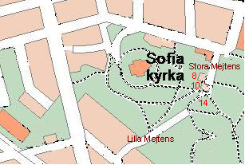
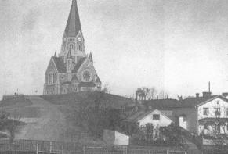
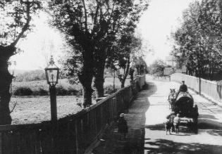
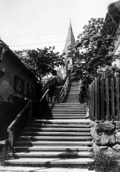
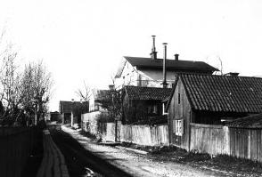
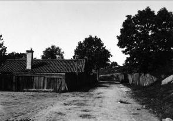
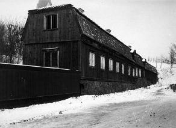
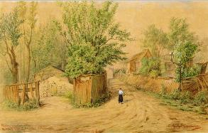
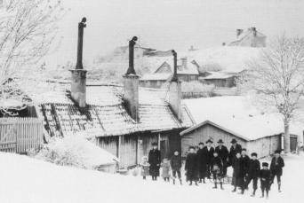
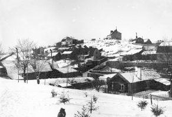

Södermalm i tid och rum
Stora och Lilla Mejtens gränd
Ur Kulturhus på Söder och Djurgården, Arne Eriksson, 1999
|
Det är kryddkrämaren Scipio Mijtens som gett anledning till grändnamnen. Av Holms tomtbok 1674 framgår att »Kryddkrämarens Scipio Meijtens Trägård« låg i nuvarande kvarteret Vintertullen Mindre. År 1730 nämns »Meitens gränd«. Stora Mejtens Gränd 14 Det norra huset, som tidigare hade adressnummer 12, härrör troligen från 1700-talets början och förvärvades av staden 1901. Det södra husets tomt uppläts 1745 och bebyggdes i samband med detta. På 1910-talet torde en grundlig reparation ha företagits. |
 |
Stora Mejtens Gränd 10
Tomten uppläts 1753. Bostadshuset stammar troligen från 1700-talets senare del och har sin nuvarande utformning efter ombyggnad 1848. Detta år byggdes även uthuset.
Stora Mejtens Gränd 8
Denna bergplats utan tomtnummer uppläts av stadsfullmäktige 1878 kostnadsfritt till Stockholms evangeliskt lutherska missionsförening (SELM). Kort efter det att SELM hade bildats 1877 började styrelsen tänka på att utvidga verksamheten. Några styrelseledamöter tog en dag en promenad i de »avlägsna trakterna av Södermalm«. De lade märke till »den sedeslöshet, okunnighet, sjukdom och nöd av alla slag, vari det stora flertalet av invånarna levde«. Mest ömmade man för de många vanvårdade barnen. Man kom överens med en fattig skomakare i en koja vid Kvastmakarbacken att han mot en avgift av en krona gången skulle öppna sin bostad för söndagsskola. Barnen samlades i det lilla rummet, men trängseln och den osunda luften gjorde det snart omöjligt att fortsätta.
|
  Missionshyddan till höger och nr 10 från öster ca 1910 Missionshyddan till höger och nr 10 från öster ca 1910
|
Efter kontakter med stadens myndigheter tilldelades SELM två markområden. Två missionshyddor uppfördes under år
1879 och 1880 efter ritningar av arkitekterna Axel och Hjalmar Kumlien - den ena vid Stora Mejtens gränd. Huset kostade 12
000 kr att uppföra. Det var betalt redan vid invigningen i maj 1880. Hyddan uppfördes i trä med en hög vindsvåning med två rum åt den södra gaveln. På bottenplanet fanns den kvadratiska samlingssalen med två höga fönster på den norra gaveln. Det blev i längden betungande för SELM att driva verksamheten. År 1897 antog man ett anbud från Katarina församling att köpa hyddan för medel som »ett fruntimmer skänkt för detta ändamål«. Hyddan blev en föregångare till Sofia kyrka, som invigdes 1906. |

Den legendariske och omtyckte komministern i Katarina församling Ernst Klefbeck bedrev en omfattande ungdomsverksamhet med säte i missionshyddan. När Sofia blev egen församling 1917 blev Klefbeck dess förste kyrkoherde och verkade i denna befattning i mer än tjugo år till 1938. I dag finns en konstsmidesverkstad i huset.
|
  Stora Mejtens gränd söderut från Bondegatan år 1905. Stora Mejtens gränd söderut från Bondegatan år 1905.Längst bort till höger syns Missionshyddan.
 Trapporna från Stora Mejtens gränd upp till Sofia kyrka. Huset till höger är Missionshyddan.
|
 Stora Mejtens gränd 7-11. Samma motiv som på bilden till vänster. men närmare Missionshyddan. 1909
 Stora Mejtens gränd nr 5 från söder . Här skulle Ringvägen gå fram, vilket aldrig realiserades.
|


|
 LIlla Mejtens gränd från Malmgårdsvägen österut. Byggnaden tillhör Verner Groens malmgård. I bakgrunden Sofia kyrka.
 Lilla Mejtens gränd 7 till vänster och 9 till höger. Akvarell av Fritz Ahlgrensson 1901. |
  En gård på LIlla Mejtens gränd sedd från söder. Där huset till höger
på höjden syns,
står idag Sofia kyrka. Gården syns längst till vänster på bilden nedan.
En gård på LIlla Mejtens gränd sedd från söder. Där huset till höger
på höjden syns,
står idag Sofia kyrka. Gården syns längst till vänster på bilden nedan.
 LIlla Mejtens gränd 4-8 och 5-7 sedd från söder. 1896. Kåkarna ligger i sänkan mellan norra och södra Vita Bergen. På toppen av det norra berget stod 10 år senare Sofia kyrka. I denna sänka var det tänkt att Ringvägen skulle dras fram, vilket aldrig blev fallet. |

{kind=link}
{kind=link}